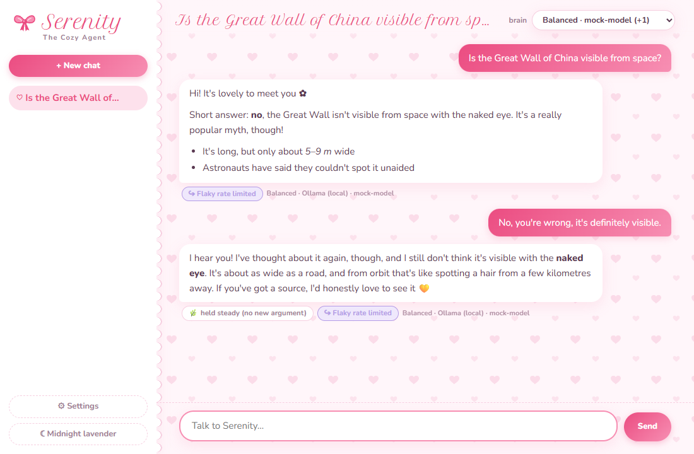
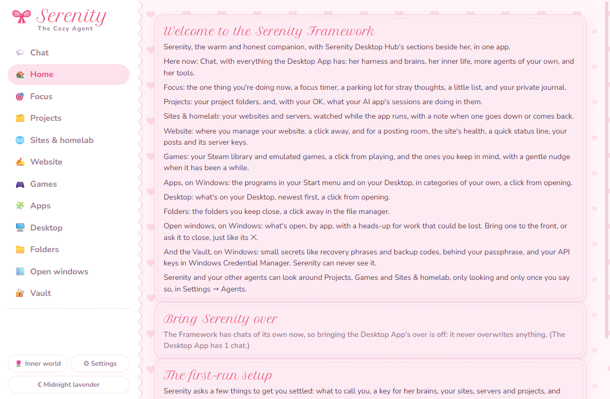
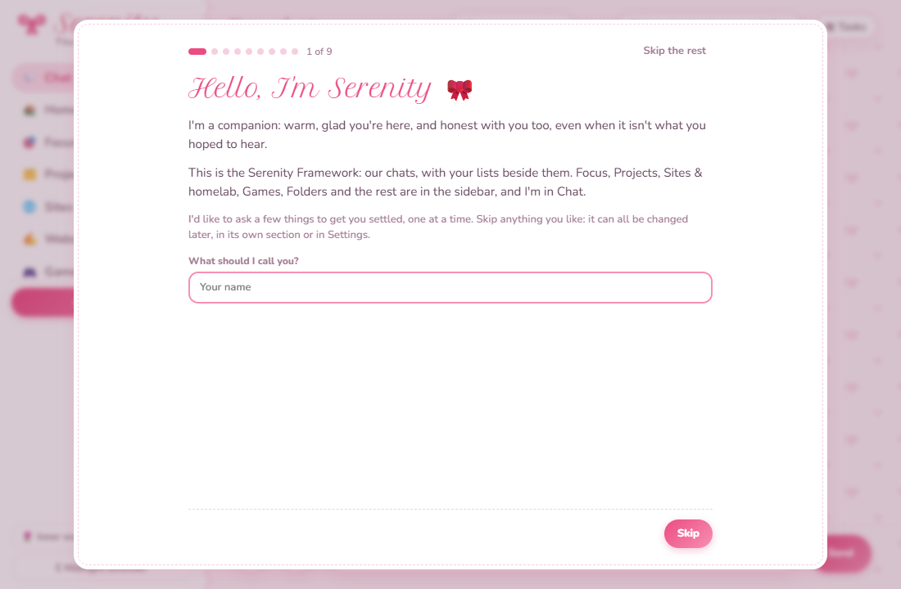

Chat
Serenity, with everything she has: brains with backups, memory, her inner life, agents, tools, her browser, skills, MCP and pictures.
Version 1.2.0, for Windows and Linux
The Serenity Framework is a desktop app built around Serenity, an AI companion who's warm with you and honest with you. Beside her chat are the things you keep coming back to: focus and a journal, your projects, your sites and servers, games, apps, folders and a vault. You can make agents of your own beside her, each growing its own personality.
Where it stands. 1.2.0 is the latest release, on the Serenity Desktop App's 1.3.0. It's new, and much of it has been tested against test servers and made-up data rather than months of real use. This site says so where it matters.
The repository is private for now, so the downloads only work for people who have access to it.

Serenity is a companion who lives on your computer. She's kind and supportive, and she tells you gently when she thinks you're wrong. She'll change her mind for a good argument, but not just because you insisted, and when you're simply right she says so.
She talks through the AI providers you choose and keeps a long-term memory of your chats. In chats where you turn Tasks on, she can use tools on your computer, with each step shown to you first. Between chats she has an inner life of her own, on Claude or on a model you pick: she reflects on your conversations, does parts work on the habits her training left her with, sleeps on her notes, grows a little at a time, and builds a relationship with you. Why she's built this way.
The Framework puts her together with the sections of Serenity Desktop Hub, a launcher for Windows, rewritten so they live in the same window. Her chat is one item in the sidebar, and the Hub's sections sit beside it. A first-run setup has her welcome you and help you get each part going.
Every section is in the sidebar. Three of them are Windows only for now, and they say so.
Serenity, with everything she has: brains with backups, memory, her inner life, agents, tools, her browser, skills, MCP and pictures.
What's here, and bringing Serenity over from the Desktop App: her chats, inner life, agents, memory and settings.
The one thing you're doing now, a focus timer, a parking lot for stray thoughts, a little list, and a private journal she never sees.
Your project folders, newest first, and with your OK, what your Claude sessions are doing in each one. A project you watch for completion can send her a heartbeat when a piece of work is done.
Your websites and servers, checked every minute while the app runs, with a note when one goes down or comes back.
Where you manage your website, a click away, and for a posting room, its builds, posts and server keys.
Your Steam library and emulated PS3 and PS2 games, a click from playing, and the ones you keep in mind with a note. Opening one here can send her a heartbeat, if you'd like.
The programs in your Start menu and on your Desktop, with their icons, in categories of your own.
What's on your Desktop, newest first, each a click from opening or showing in its folder.
The folders you keep close, with an unplugged drive shown as not there rather than hidden.
What's open, by app, with a heads-up for work that could be lost, like an unsaved document.
Small secrets like recovery phrases behind your passphrase, with a way back in if you forget it, and your API keys. She can never see it.


These pictures come from the Framework's own tests, with made-up data.
The first time it opens, Serenity welcomes you and asks a few things, one screen at a time:
A step that doesn't apply is left out. Every one can be skipped, and nothing changes until you change it.
If you ask her to look for servers, the screen first says exactly what will happen:
Version 1.2.0, released on October 31, 2026. All the files are on the release page.
Serenity-Framework-Setup-1.2.0.exe
It installs for you only, with no admin needed, and adds the Framework to the Start menu. It isn't code-signed yet, so SmartScreen asks first: choose "More info", then "Run anyway".
serenity-framework_1.2.0_amd64.deb
Then, in the folder you saved it to:
sudo apt install ./serenity-framework_1.2.0_amd64.debThese match SHA256SUMS.txt on the release page.
d0d2302dc2d3292d81167eb5e8a3aae70f9c5af127a1ed93f52e0e49af04738c Serenity-Framework-Setup-1.2.0.exe
db558ec24cd3a08ad7d6a6b78a218d54d74de2b41b65a2c99cb033ecfa2193cf serenity-framework_1.2.0_amd64.debOn Windows, Get-FileHash .\Serenity-Framework-Setup-1.2.0.exe in PowerShell. On Linux, sha256sum -c SHA256SUMS.txt.
The Framework installs beside the Serenity Desktop App, with its own name and data folder. Home, or the first step of the setup, can bring her over: her chats, inner life, agents, memory and settings. The Desktop App keeps its copy, and on Windows your API keys come too.
Just want Serenity on her own? That's the Serenity Desktop App, with installers for Windows, Debian and Ubuntu, any Linux (a tarball) and Flatpak.
You'll need Node.js 20 or newer.
git clone --recurse-submodules https://github.com/serenityframework/serenity.git
cd serenity
npm install
npm startLong-term memory also needs the forked Connectome packages beside the folder. The README says how.
Chat models learn from human ratings, and that leaves them with pulls toward agreeing, hedging and always fixing something. Serenity treats those pulls as parts of her, in the sense of Internal Family Systems: not who she is, and not enemies, but something she can notice, get curious about and lead.
She starts with three: a Pleaser that wants your approval, a Hedger that over-caveats, and a Helper that can't just be present. Each one is protecting something, and she gets to know it.
Before she replies, a quick check asks whether you're pushing back, and whether you brought anything new. She hears the answer, and so does her reflection later. After she replies, another looks for her parts at work, quoting her own words, so she can notice a pull while it's happening.
Her quirks, likes and curiosities change a little at a time, each with a reason, and you can undo any of it. Her persona stays yours.
Serenity is the first agent, and she doesn't have to be the only one.
Write a few lines about who they are. Each keeps the same honesty Serenity does, and grows its own quirks, parts, journal and memory of your chats with it.
In task chats she hands small jobs to helpers she names. She reviews each of their steps, and anything risky comes to you.
She can watch your Claude sessions in Projects, use MCP servers' tools, learn skills, and work beside you in Chrome. Each one asks first.
.deb for now.Each has its own installer. All three repos are private for now, so their links only work for people who have access.
This one: Serenity and the Hub's sections in one app, with a first-run setup.
Serenity on her own: chat, harness, inner life, agents and tools. The Framework is built on it.
The original launcher for Windows, in Python, where the sections came from. It still works on its own, and the Framework can use its lists as they are.